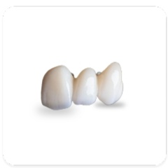
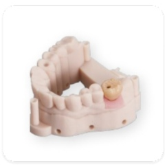
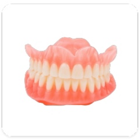
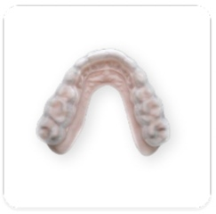

أطلق العنان للابتكار الرائد في السوق مع مختبر طب الأسنان الخاص بنا
لا يمكن تحقيق ترميمات متسقة وملائمة إلا من خلال التواصل القوي...

تيجان الزركونيا لمدة 5 أيام

حلول زراعة الأسنان الشاملة

طقم الأسنان ذو الموعد الثاني

أطراف صناعية فورية

واقيات ليلية مطبوعة ثلاثية الأبعاد

تقويم الأسنان الشفاف

أجهزة علاج انقطاع التنفس